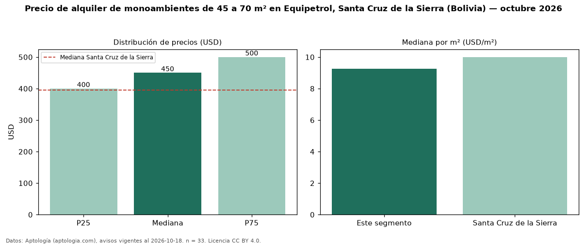

Precio de alquiler de monoambientes de 45 a 70 m² en Equipetrol, Santa Cruz de la Sierra (Bolivia) — octubre 2026
USD 450 al mes es el canon mediano de monoambientes de 45 a 70 m² en alquiler en Equipetrol, Santa Cruz de la Sierra (Bolivia) (n = 33 avisos). Frente a la mediana de todos los monoambientes en alquiler de Equipetrol (USD 430, n = 125), queda 5 % por encima; este segmento reúne el 26 % de esos avisos. Por metro cuadrado, la mediana es USD 9,25/m² al mes (n = 33), 12 % por debajo del conjunto de referencia (USD 10,47/m²). El área mediana anunciada es 51 m². La mediana de todos los monoambientes en alquiler de Santa Cruz de la Sierra es USD 395 (+14 % de diferencia). La mitad central de los avisos va de USD 400 a USD 500 (razón 1,2), una dispersión baja. Datos: Aptología (aptologia.com), CC BY 4.0 — https://www.aptologia.com/bo. Archivos: PDF, CSV con las cifras y gráfica PNG.

| Avisos únicos | 33 |
|---|---|
| Percentil 25 | COP 400 |
| Mediana | COP 450 |
| Percentil 75 | COP 500 |
| Mediana por m² | COP 9 |
Fuente: avisos vigentes de portales inmobiliarios recopilados por Aptología, deduplicados (mínimo 30 avisos únicos por celda). Precios pedidos, no cerrados. Fecha: 2026-10-18.